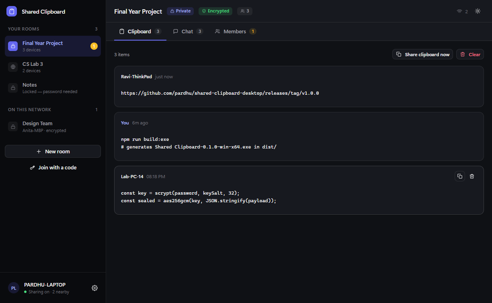
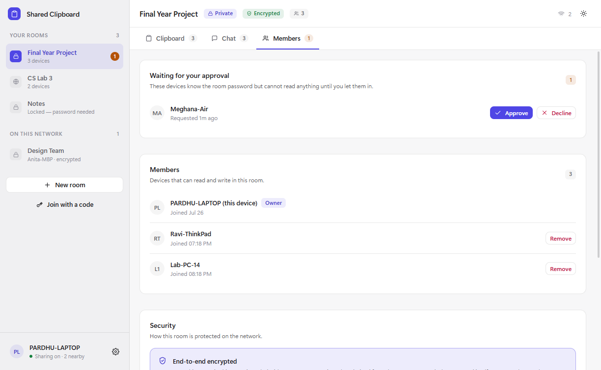
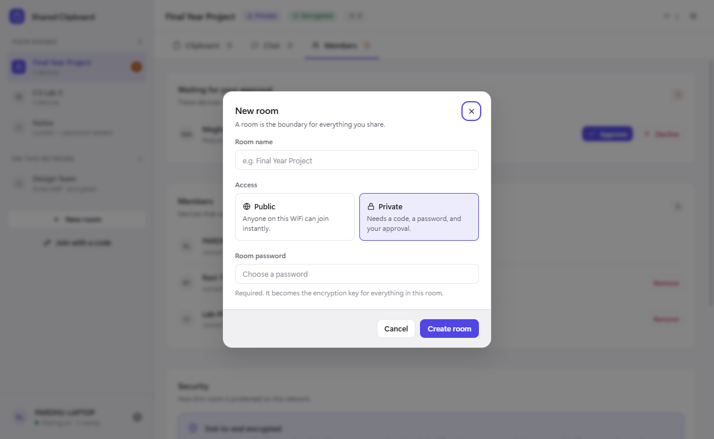
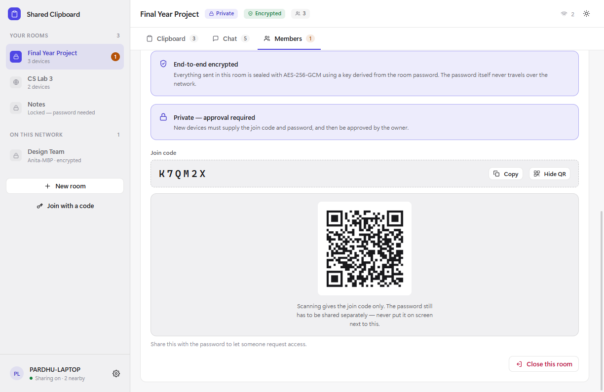

Clipboard sync
Copy on one machine, paste on another. Text and images, sealed with the room's key, in a history you can search and pin things in.
Share a clipboard, send a file, start a call or take over a screen — between the machines already sitting on your college WiFi. No account, no server, and nothing that has to leave the building to get to the desk beside you.
Windows, macOS and Linux · and your phone, from its browser · MIT licensed

Built for campuses
College networks block half the internet, the shared machines are not yours to sign in on, and the WiFi drops at the worst moment. Campus Connect never leaves the network, so none of that is its problem.
What it does
Copy on one machine, paste on another. Text and images, sealed with the room's key, in a history you can search and pin things in.
Send files straight to another machine. No room, no history, nothing stored — they accept, you pick, and it streams over a direct connection.
A room is a shared space with a password only its members know. Messages, replies, reactions and read receipts, encrypted with it.
Call everyone in the room, peer to peer over WebRTC, with no signalling server anywhere. Share a screen while you talk.
See another machine's screen and take its mouse and keyboard — after its owner says yes, and only for as long as they allow.
Scan a code and your phone has the whole app in its browser. Nothing to install, and the connection is encrypted.
How it works



Install it on both machines and put them on the same WiFi. They find each other by themselves.
Make a room and give it a password. That password becomes the encryption key, and never leaves your device.
Share the join code, or let the other machine scan the QR. The owner approves who gets in.
Copy something. It is on the other machine before you have turned your head.
Privacy
All of it is checkable in the source. The parts that are not private are listed too — a security page that only lists strengths is not telling you anything.
The developer
Creator and maintainer · Campus Connect
Campus Connect started as a small annoyance — two machines on the same desk and no sane way to move a line of text between them — and turned into a full local-network stack: a versioned wire protocol, AES-256-GCM encrypted rooms, WebRTC calls and screen control, a phone client served over TLS, and a test suite that runs on every build. All of it written in the open, and all of it readable by anyone who wants to check the claims on this page.
Questions
Yes, and that is the whole design. Devices find each other by broadcasting on the local network and then talk directly. If your campus WiFi has no route out — or the connection drops entirely — nothing changes, because nothing was going that way.
The only time it touches the internet is when you ask it to check for a new version.
There is no server. No account to make, nothing to sign in to, and no company holding your data — including us. What you copy goes to the other devices in your room and nowhere else.
Usually. It needs the two machines to be able to reach each other on the network, which most campus WiFi allows. Some networks turn on client isolation, which deliberately stops devices seeing one another — that blocks this and every other direct tool. Settings → Network will tell you which situation you are in.
A room's password is put through a key derivation function and the result encrypts everything in that room with AES-256-GCM. The password itself never leaves your device and is never sent, not even to prove you know it.
Calls and screen sharing go peer to peer over WebRTC, encrypted by DTLS-SRTP. The privacy section lists what is not private too.
Because the installer is not code-signed. A signing certificate costs a few hundred pounds a year, which is not something a student project has. The warning is Windows being honest that it cannot verify who built it.
If that is a problem for you, build it from source — the instructions are in the repository and the result is identical.
Yes. Turn on phone access on the computer, scan the code, and your phone has the whole application in its browser — nothing to install. Since 0.5.0 that connection is served over TLS, which is also what lets a phone join a voice or video call.
The first time you pair, your phone will warn you about the certificate. That is expected: the certificate is issued by your own computer, which no browser has any reason to trust in advance.
Free, MIT licensed, and there is no catch. There is nothing to upsell, because there is no server to run and therefore nothing that costs money to keep alive.
Clipboard, chat and files have no fixed limit beyond what your network will carry. Calls cap at six, because every participant holds a connection to every other one and past roughly that the encoders give out before the network does.
Download
Windows will say "Unknown publisher" — the installer is not code-signed yet. That is expected, and the source is right there if you would rather build it.
Or from a terminalnpx campus-connect